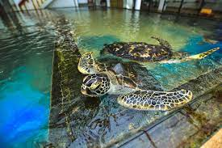
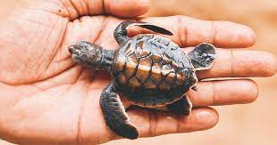
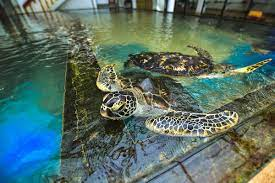
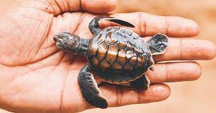

Turtle Hatcheries in Sri Lanka
Sri Lanka, nestled in the Indian Ocean, is blessed with stunning coastlines and abundant marine biodiversity. Among its remarkable conservation efforts, turtle hatcheries have emerged as crucial sanctuaries for these ancient creatures. These establishments play a pivotal role in preserving endangered turtle species and raising awareness about the importance of marine conservation.
 



Sea turtle hatcheries are commonly seen on Sri Lanka's western and southern coasts. Sri Lanka shelters a good count of endangered species across the globe, and one of the most exciting species amongst them is the sea turtle. The hatcheries along Sri Lanka's western coast regularly witnesses a good count of sea turtles. Swimming all their way through the mighty Indian Ocean, the Sea Turtles reach hatcheries during their hatching period
Best time to visit
- Best time to visit sea turtle hatchery is When the female sea turtles return to their nesting grounds to lay their eggs.
- Turtle hatching season in Sri Lanka is known to be from November to May. With their peak seasons between January to March
- It's also good to know that Sri Lanka has two monsoon seasons, a North East monsoon (between October and January) as well as a South West monsoon, (between May and July)
- The best times to visit for calmer oceans and stable weather is between January to April and Mid July to September, this applies for the whole country
- However, February to September is calm and dry too, but only in the North and East.